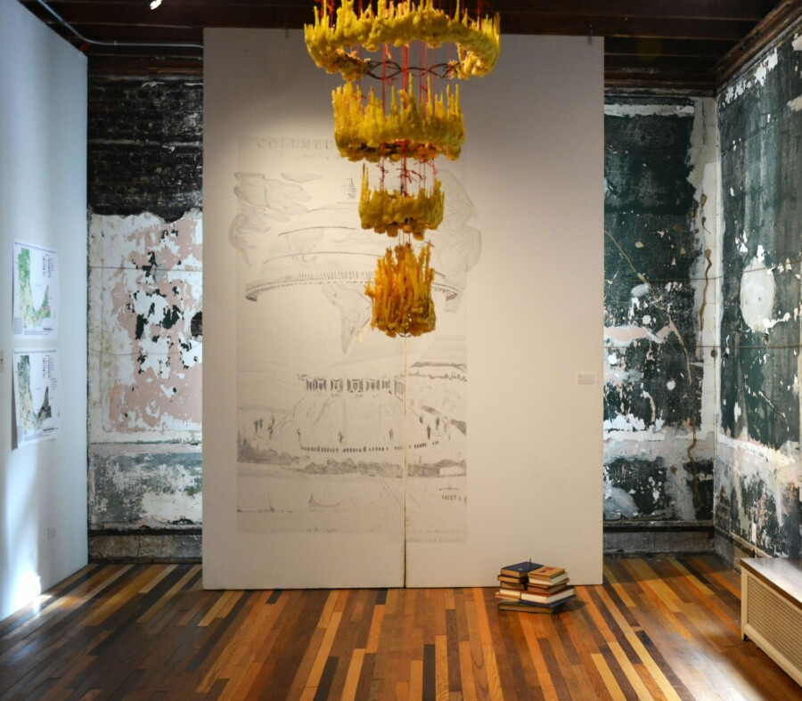

Myth of the Organic City: Blue Moon Closing Celebration
Toast the artists and the closing of this well loved exhibition with food and drink. This is the last time to see Myth of the Organic City, a historical and contemporary exhibition that explores Chicago’s design and land use, from its indigenous roots to present-day developments. The exhibition features over 25 artists and includes maps, landscape designs, installations, wall drawings, sculptures, and multimedia works. As we face the threats of climate change, the exhibition presented throughout all four floors of the house, aims to reimagine our complicated relationship with the City and nature.
Myth of the Organic City is a historical and contemporary exhibition that explores Chicago’s design and land use, from its indigenous roots to present-day developments. The exhibition features over 25 artists and includes maps, landscape designs, installations, wall drawings, sculptures, and multimedia works. As we face the threats of climate change, the exhibition presented throughout all four floors of the house, aims to reimagine our complicated relationship with the City and nature.
We are honored to present the work of Alexandra Antoine, Rebecca Beachy with Nina Barnett and Christine Wallers, Deborah Boardman, Jennifer Buyck, Carbon Register, Julie Carpenter with Jane Norling, Eugenia Cheng, Carl Fuldner and Shane DuBay, Jane Georges, Iker Gil, Brian Holmes and Jeremy Bolen, Candace Hunter, Matthew Kaplan, Jenny Kendler and Giovanni Aloi, Haerim Lee, JeeYeun Lee, Jin Lee, Nathan Lewis, Norman W. Long, Luftwerk, Bmejwen Kyle Malott, Jenny McBride, Meida Teresa McNeal, Sherwin Ovid, Viet Phan, Melissa Potter, Emilio Rojas, Eleanor Ross, Pierre-Alexandre Savriacouty, Tria Smith and Katrin Schnabl, Deborah Stratman, Stephen Lowell Swanberg, Jan Tichy, Aleksandra Walaszek, Rhonda Wheatley, Amanda Williams, JI Yang, Sangwoo Yoo, and others.